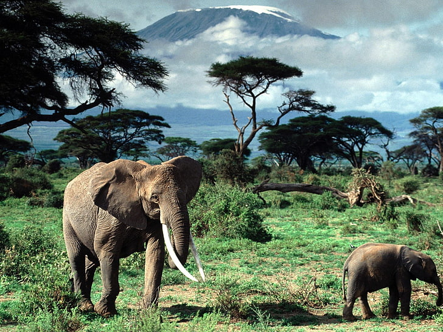
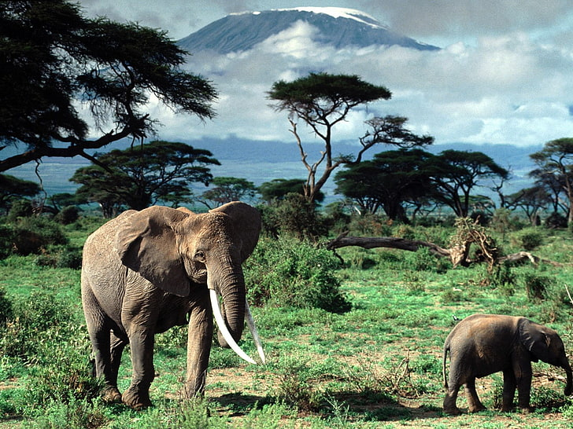

Location:South Africa is located at the southern tip of the African continent, bordered by Namibia, Botswana, Zimbabwe, Mozambique, Eswatini (Swaziland), and Lesotho. It has coastlines along the Atlantic Ocean to the west and the Indian Ocean to the south and east.
Population:As of my last update in January 2022, South Africa's population was estimated to be around 60 million people, making it the most populous country in Africa.
Languages:South Africa is a multilingual country with 11 official languages, including isiZulu, isiXhosa, Afrikaans, English, Sepedi, Setswana, Sesotho, Xitsonga, siSwati, Tshivenda, and isiNdebele.
Culture:South Africa is known for its cultural diversity, with influences from indigenous African, European, Asian, and other cultures. It has a rich artistic and musical heritage, including traditional African music, jazz, and contemporary art. South Africa is also famous for its cuisine, which reflects its multicultural population.
Economy:South Africa has a mixed economy with abundant natural resources, a well-developed financial sector, and a diverse industrial base. It is one of the largest economies in Africa, with key sectors including mining, agriculture, manufacturing, and services.
Tourist Attactions:South Africa is a popular tourist destination known for its wildlife, natural beauty, and cultural attractions. Tourists visit national parks such as Kruger National Park and Table Mountain National Park, as well as historic sites like Robben Island and the Cradle of Humankind.
Geography:South Africa has diverse geography, including coastal plains, mountain ranges, savannas, and semi-desert regions. The Drakensberg Mountains, Table Mountain, and the Kalahari Desert are notable natural landmarks.
History:South Africa has a complex history marked by colonialism, apartheid, and struggles for independence and democracy. The apartheid system, which institutionalized racial segregation and discrimination, was dismantled in the early 1990s, leading to the establishment of a democratic government under Nelson Mandela's leadership in 1994.
 
